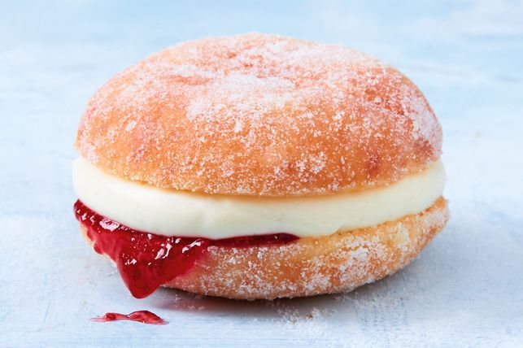

Jam and Custard Donught
For an easy impressive treat, whip up some custard to jazz up some shop-bought doughnuts. Be careful, this jam-packed treat will ooze all over the place as you're munching down into it.
Ingredients
- 500ml (2 cups) milk
- 2 tsp vanilla bean paste
- 2 egg yolks
- 215g (1 cup) caster sugar
- 60g cornflour
- 3 x 290g packets jam-filled doughnuts
- 30g butter, melted
- 150ml double cream, whipped
Steps
- Step 1
Bring 375ml (1 1/2 cups) milk and vanilla to the boil in a saucepan over medium heat. Remove from heat.
- Step 2
Use electric beaters to beat the yolks and 80g sugar in a heatproof bowl until pale and creamy. Add the cornflour and remaining milk and whisk until combined. Slowly pour the hot milk mixture into the yolk mixture, whisking continuously, until smooth. Return the mixture to the saucepan and whisk over medium heat for 3-5 minutes or until the mixture boils and thickens. Transfer to a bowl. Cover the surface with plastic wrap. Place in the fridge for 3 hours or overnight to chill.
- Step 3
Line a baking tray with baking paper. Place remaining sugar in a bowl. Brush each doughnut with melted butter. Roll in the sugar to coat. Place on the prepared tray.
- Step 4
Use electric beaters to beat chilled custard until smooth. Use a spatula to fold cream into custard until combined. Cut doughnuts in half horizontally. Spoon custard mixture over bases. Carefully replace tops to serve.